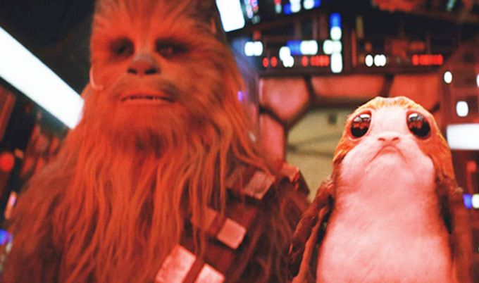

A Thank You Letter to JJ Abrams
Dear JJ,
Can I call you JJ? Are we on first-name basis? I'll just assume yes. Earlier this year, I wrote you an open letter with a call to include porgs in the Rise of Skywalker.
The porgs were only on screen for a few seconds, but they were there. You did it. Thank you.
Now was the movie actually terrible as I predicted it would be? I don't think so. Granted, I set my expectations really low. I was anticipating a dull plot with unsurprising twists that generally add no value to the Skywalker story. But my expectations, despite being low, were exceeded. The gratuitous fan service, throwbacks, and amazing visuals generally covered over any plot holes. It wasn't great like the original or Empire Strikes Back or Rogue One. But I don’t think it’s possible for Disney to create a great Star Wars film. Actually, I’m not sure that anyone could create a great Star Wars film and maintain the same mass appeal as they have now.
Rise of Skywalker basically took everyone’s favorite parts of the originals, combined with new elements from modern action blockbusters, and mashed them together into a movie. I’m sure that Disney-Lucasfilm has a checklist of different things that they need to include in each film, and the plot creativity and coherence suffer in order to adhere to it.
Star Wars and Empire and Rogue One are great films because they were new and introduced novel concepts and ways of storytelling to audiences. They have a reason for existing. Big budget blockbusters these days exist only to make money so they become bland with no risk, but with amazing visuals and unsurprising storytelling that keeps audiences comfortable.
Despite all these limitations, I was impressed that you were able to add some thematic creativity through your visual storytelling. The film had a feel similar to Knights of the Old Republic, one of the better Star Wars Games. The Kylo Ren and Rey force "share" scenes, expanded upon from Force Awakens, were an excellent addition to the Star Wars universe. Those force powers weren't in the originals, but growth beyond the originals in any way is what can add positive novelty to the film. Kylo Ren's flashback sequence excellently mirrored the analogous scene in Force Awakened and Kylo Ren and Rey's fight on the water excellent mirrored the Obi-Wan and Anakin fight on the lava.
So that's where Rise of Skywalker landed. The film followed the modern action superhero formula, but it did it well and managed to add something new even if not much. Unlike the Last Jedi (and any of the prequels), the plot was mostly coherent and the characters behaved plausibly. Sure, no one needed to see this film, but it's a fun way to spend a couple hours a few times. Well done.
